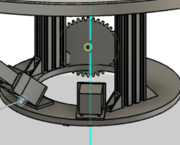
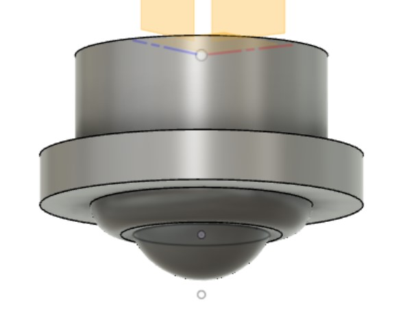

## Week 13
### Monday-Dec 5
Today was yet another fun CAD-filled day. Finally deciding on having the gear teeth on the inside to enable the top platform to have as much diameter as needed, one aspect of the drum-attached platform was done. The more pressing issue was Nathan and I's discussion about the gear situation that would drive the rotation of the dish relative to the drum. We played around a lot with how the gears would look and their geometrical relationship with the shaft of the motors and the distance between the bottom and top platforms. Using Fusion's gear-making function, I played around with this all class, and Nathan and I talked extensively about this. We considered a two-gear approach that I explored a bit to work around some of our dimensional constraints with all of the other components. On Wednesday, I will start helping to machine and bring what I've been working on to life. Between the sessions, I also will continue to think about and work through the gear problem before the next session, and I created an updated CAD for the bracket and one for our finalized caster wheels that we need to figure out the height difference between the platforms.


### Wednesday-Dec 7
Now the fun has truly begun! For the entire class session, I was with Justin in the Building 4 Floor 4 Architecture shop milling out the platforms that we would need for the final prototype. These were made out of delrin, a material suitable for drilling holes into. We ended up deciding that the gear teeth on the bottom platform should be made separately from the track for the wheels because this would simplify the milling process. Additionally, the track for the wheels became rectangularly-extruded sections inside of spherical tracks because it would make the process easier. As a result, after today, we ended up with two nice platforms that we would work with, and the wheels fit in nicely on the top platform and moved efficiently enough on the lower platform. Things were starting to look quite good today! I stayed in to do some drilling as well after class.
<img src="./Dec7_2.jpg" alt="Finished" width="500">
<video width="500px" height="500px"
controls="controls"/>
<source src="shop.mp4"
type="video/mp4">
</video>
### Friday-Dec 9
I went into the Building 31 shop with Nathan and Xavier today to get started on assembling everything together. I used the drill a lot to drill in holes to keep the bottom platform stable on the inner and outer diameters while keeping it as flat as possible. Below is a picture of my work and also a video after we had assembled what we had, and we were able to mount the dish part to the drum and have our two degrees of freedom. Significant progress was done!
<video width="500px" height="500px"
controls="controls"/>
<source src="friday_progress.mp4"
type="video/mp4">
</video>